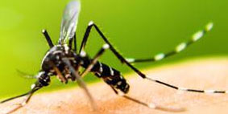

Dengue
El dengue es una enfermedad producida por un virus de la familia de los flavivirus. El hombre es el hospedador y un mosquito del género Aedes.
Incidencia
En las últimas décadas ha aumentado enormemente la incidencia de dengue en el mundo. Según las estimaciones, se producen 390 millones de infecciones cada año, de los cuales se manifiestan clínicamente (el resto son asintomáticos) 96 millones de personas en todo el mundo.
Las regiones del mundo en las que se registran más casos son Centroamérica, Caribe, norte del Cono Sur, sudeste asiático y subcontinente indio.
Causas
El virus del dengue se propaga por mosquitos hembra, Además, estos mosquitos también transmiten la fiebre chikungunya, la fiebre amarilla y la infección por el virus de Zika.
La forma de contagio mayoritaria es a través de la picadura.
+ INFO